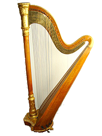

Տավիղ
Քնարը-լարային երաժշտական գործիք է:
 Տավիղը մարդկության ամենահին երաժշտական գործիքներից մեկն է: Տավիղի ծագումը սկսվում է ձգված աղեղով աղեղից: Եգիպտական դամբարաններից որմնանկարների վրա պատկերված տավիղները (ծռված) դեռ իրենց տեսքով նման են աղեղների, և այս տավիղներն ամենահինը չեն: Ամենահին տավիղը հնէաբանները հայտնաբերել են Միջագետքում շումերական քաղաքի պեղումների ժամանակ, որի տարիքը գնահատվում է չորսուկես հազար տարի: Տավիղը մեկ անգամ չէ, որ հիշատակվում է Աստվածաշնչում. Այն ամենատարածված և սիրված երաժշտական գործիքն էր հին Մերձավոր Արևելքում, Հունաստանում և Հռոմում: Ապոլոնի տավիղը գեղեցկության և սիրավեպի խորհրդանիշ է:
Տավիղը Եվրոպա է եկել միջնադարի սկզբին և մեծ ժողովրդականություն է վայելել հատկապես Իռլանդիայում, որտեղ նրա կերպարը մինչ օրս օգտագործվում է բազմաթիվ պետական խորհրդանիշերում, ներառյալ զինանշանը և նախագահի դրոշը:
Տավիղը անընդհատ կատարելագործվում էր. 18-րդ դարի սկզբին գերմանացի վարպետ Հոխբրուկերը Դոնովուորթից (Բավարիա, Գերմանիա) հորինեց տավիղի ոտնակներ, ինչը հնարավորություն տվեց բարձրացնել քրոմատիկ մասշտաբները և հեշտացնել տավիղ նվագելը: Գրեթե մեկ դար անց ՝ 1810 թվականին, դաշնամուրի վարպետ Սեբաստիան Էրարդը ստեղծեց կրկնակի գործողության ոտնակի տավիղ: Այս ոտնակներով դուք կարող եք երկու անգամ նորացնել լարը ՝ բարձրացնելով ձայնը կիսաձայնով և տոնով, այդպիսով ապահովելով քրոմատիկ սանդղակ վեցուկես օկտավաների տիրույթում:
Տավիղը եռանկյունաձեւ է, լարերը քաշում են շրջանակի վրա, ներկայումս օգտագործվում են 45-47 լարեր, բայց տարբեր ժամանակներում և տարբեր ժողովուրդների մեջ դրանց թիվը 7-ից 30-ն էր: Այն համարվում է ամենագեղեցիկ գործիքներից մեկը նվագախումբ Դրա շրջանակը զարդարված է փորագրություններով և զարդանախշերով, երբեմն ՝ ոսկուց և մարգարիտից, իսկ նազելի ուրվագծերը թաքցնում են եռանկյունաձեւը: Տավիղը կարող է կշռել մինչև 20 կիլոգրամ:
Քնարի վիրտուոզ հնարավորությունները բավականին յուրահատուկ են. Լայն ակորդներ, հատվածներ arpeggios- ից, glissandos (ձեռքը սահելով որոշակի լարով լարված բոլոր լարերի վրա), ներդաշնակությունները մեծ են:
Ռուսաստանում առաջին տավիղը հայտնվեց Եկատերինա II- ի ժամանակ: 1765 թվականին ցարինան ձեռք բերեց տավիղ Սմոլնի ինստիտուտի աշակերտների համար, իսկ գործիքը անմիջապես նորաձեւ դարձավ ազնվական միջավայրում: «Քնար են նվագում միայն նրանք, ովքեր ազատ ու ազնիվ են», - ասաց բանաստեղծը:
Որպես դիտարժան մեներգ և որպես ուղեկցող գործիք, տավիղը լայնորեն օգտագործվում և սիրվեց ռուս առաջատար կոմպոզիտորների կողմից. Ն. Ռիմսկի-Կորսակով, Պ. Չայկովսկի, Մ. Գլինկա, Ս. Ռախմանինով, Ս. Պրոկոֆև և շատ ուրիշներ: Եվրոպական կոմպոզիտորներից տավիղը առավել լայնորեն օգտագործում էին Գ. Բերլիոզը, Ռ. Վագները և Ֆ. Լիստը: Ռիչարդ Վագներն իր «Ռիհանի ոսկի » օպերայում նվագախմբում օգտագործում էր վեց տավիղ, բայց սովորաբար նվագախմբում օգտագործվում է մեկ կամ երկու տավիղ: